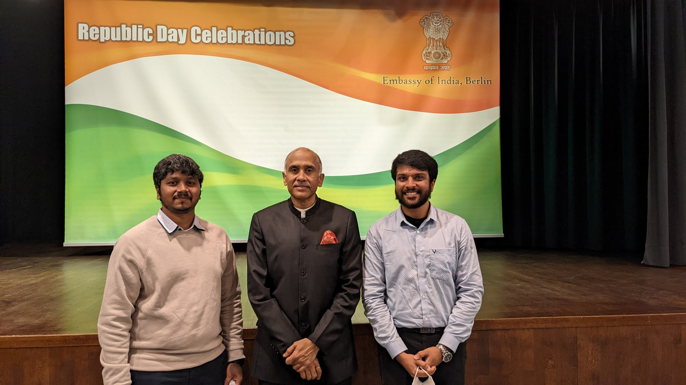

Official Reception // Embassy of India, Tiergartenstraße, Berlin (26 January 2022)
1. The Republic Day 2022 Diplomatic Delegation
On the historic occasion of India's 73rd Republic Day on January 26, 2022, I had the privilege of receiving an official invitation to represent the Indian student community and academic scholars residing in the state of Saxony-Anhalt (Magdeburg) at the Embassy of India in Berlin.
2. Bilateral Educational & Research Dialogue
The delegation participated in discussions with diplomatic officials and academic attaches concerning:
- Fostering bilateral engineering pipelines between leading German technical universities (such as OVGU Magdeburg) and premier Indian technical institutions.
- Facilitating smoother industrial internship onboarding for international engineers entering German automotive and manufacturing sectors.
- Building strong community support frameworks for scholars navigating life and research in Germany.
3. Leadership & Global Perspective
This diplomatic engagement enriched my cross-cultural leadership skills, reinforcing the value of technical diplomacy and collaborative international engineering projects that connect global industry standards with international talent.